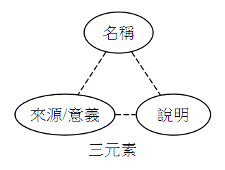

<!DOCTYPE html>
<html>
<head><meta name="generator" content="Hexo 3.8.0">
  <meta charset="utf-8">
  
  <title>程式碼寫作風格標準-CodeStyle | Mars&#39;s Blog</title>
  <meta name="viewport" content="width=device-width, initial-scale=1, maximum-scale=1">
  <meta name="description" content="目錄 一、說明 二、公開標準-PSR 2.1. PSR-1 2.2. PSR-2 2.3. PSR-4 2.4. PHPDoc   三、團隊標準 3.1. 函式內部註解 3.1.1. 功能群組註解 3.1.2. 單行註解   3.2. 命名規則 3.2.1. 原則 3.2.2. 辨識度探討 3.2.3. 命名流派比較 3.2.4. 常見的命名名詞     四、檔案結構 CodeIgniter">
<meta name="keywords" content="coding,dev,php,info,standard,style">
<meta property="og:type" content="article">
<meta property="og:title" content="程式碼寫作風格標準-CodeStyle">
<meta property="og:url" content="https://marshung24.github.io/2019/05/03/coding-style-standard/index.html">
<meta property="og:site_name" content="Mars&#39;s Blog">
<meta property="og:description" content="目錄 一、說明 二、公開標準-PSR 2.1. PSR-1 2.2. PSR-2 2.3. PSR-4 2.4. PHPDoc   三、團隊標準 3.1. 函式內部註解 3.1.1. 功能群組註解 3.1.2. 單行註解   3.2. 命名規則 3.2.1. 原則 3.2.2. 辨識度探討 3.2.3. 命名流派比較 3.2.4. 常見的命名名詞     四、檔案結構 CodeIgniter">
<meta property="og:locale" content="default">
<meta property="og:image" content="https://marshung24.github.io/2019/05/03/coding-style-standard/naming_rules.png">
<meta property="og:updated_time" content="2019-07-21T16:01:06.695Z">
<meta name="twitter:card" content="summary">
<meta name="twitter:title" content="程式碼寫作風格標準-CodeStyle">
<meta name="twitter:description" content="目錄 一、說明 二、公開標準-PSR 2.1. PSR-1 2.2. PSR-2 2.3. PSR-4 2.4. PHPDoc   三、團隊標準 3.1. 函式內部註解 3.1.1. 功能群組註解 3.1.2. 單行註解   3.2. 命名規則 3.2.1. 原則 3.2.2. 辨識度探討 3.2.3. 命名流派比較 3.2.4. 常見的命名名詞     四、檔案結構 CodeIgniter">
<meta name="twitter:image" content="https://marshung24.github.io/2019/05/03/coding-style-standard/naming_rules.png">
  
  
  
    <link href="//fonts.googleapis.com/css?family=Source+Code+Pro" rel="stylesheet" type="text/css">
  

  <link rel="stylesheet" href="https://maxcdn.bootstrapcdn.com/bootstrap/3.3.6/css/bootstrap.min.css" integrity="sha384-1q8mTJOASx8j1Au+a5WDVnPi2lkFfwwEAa8hDDdjZlpLegxhjVME1fgjWPGmkzs7" crossorigin="anonymous">

  <link rel="stylesheet" href="https://maxcdn.bootstrapcdn.com/font-awesome/4.5.0/css/font-awesome.min.css" integrity="sha384-XdYbMnZ/QjLh6iI4ogqCTaIjrFk87ip+ekIjefZch0Y+PvJ8CDYtEs1ipDmPorQ+" crossorigin="anonymous">

  <link rel="stylesheet" href="/css/styles.css">
  

</head>
</html>
<body>
  <nav class="navbar navbar-inverse">
  <div class="container">
    <!-- Brand and toggle get grouped for better mobile display -->
    <div class="navbar-header">
      <button type="button" class="navbar-toggle collapsed" data-toggle="collapse" data-target="#main-menu-navbar" aria-expanded="false">
        <span class="sr-only">Toggle navigation</span>
        <span class="icon-bar"></span>
        <span class="icon-bar"></span>
        <span class="icon-bar"></span>
      </button>
      
    </div>

    <!-- Collect the nav links, forms, and other content for toggling -->
    <div class="collapse navbar-collapse" id="main-menu-navbar">
      <ul class="nav navbar-nav">
        
          <li><a class href="/index.html">Home</a></li>
        
          <li><a class href="/archives/">Archives</a></li>
        
          <li><a class href="https://github.com/marshung24">GitHub</a></li>
        
      </ul>

      <!--
      <ul class="nav navbar-nav navbar-right">
        
      </ul>
      -->
    </div><!-- /.navbar-collapse -->
  </div><!-- /.container-fluid -->
</nav>

  <div class="container">
    <div class="blog-header">
  <h1 class="blog-title">Mars&#39;s Blog</h1>
  
    <p class="lead blog-description">Mars&#39;s learning record</p>
  
</div>

    <div class="row">
        <div class="col-sm-8 blog-main">
          <article id="post-coding-style-standard" class="article article-type-post" itemscope itemprop="blogPost">

  <header class="article-header">
    
  
    <h1 class="article-title" itemprop="name">
      程式碼寫作風格標準-CodeStyle
    </h1>
  


  </header>

  <div class="article-meta">
    <div class="article-datetime">
  <a href="/2019/05/03/coding-style-standard/" class="article-date"><time datetime="2019-05-03T13:33:24.000Z" itemprop="datePublished">2019-05-03</time></a>
</div>

    <div class="article-author">Mars Hung</div>
    
  <div class="article-category">
    <a class="article-category-link" href="/categories/info/">info</a>
  </div>


    <div class="article-reading">
  
  <span id="busuanzi_container_page_pv">文章閱讀量<span id="busuanzi_value_page_pv"></span>次</span>
  
</div>

  </div>
  <div class="article-inner">

    <div class="article-entry" itemprop="articleBody">
      
        
<div id="toc">
    <ol class="toc"><li class="toc-item toc-level-1"><a class="toc-link" href="#目錄"><span class="toc-text">目錄</span></a></li><li class="toc-item toc-level-1"><a class="toc-link" href="#一、說明"><span class="toc-text">一、說明</span></a></li><li class="toc-item toc-level-1"><a class="toc-link" href="#二、公開標準-PSR"><span class="toc-text">二、公開標準-PSR</span></a><ol class="toc-child"><li class="toc-item toc-level-2"><a class="toc-link" href="#2-1-PSR-1"><span class="toc-text">2.1. PSR-1</span></a><ol class="toc-child"><li class="toc-item toc-level-3"><a class="toc-link" href="#總覽"><span class="toc-text">總覽</span></a></li><li class="toc-item toc-level-3"><a class="toc-link" href="#範例"><span class="toc-text">範例</span></a></li></ol></li><li class="toc-item toc-level-2"><a class="toc-link" href="#2-2-PSR-2"><span class="toc-text">2.2. PSR-2</span></a><ol class="toc-child"><li class="toc-item toc-level-3"><a class="toc-link" href="#規範"><span class="toc-text">規範</span></a></li><li class="toc-item toc-level-3"><a class="toc-link" href="#範例-1"><span class="toc-text">範例</span></a></li></ol></li><li class="toc-item toc-level-2"><a class="toc-link" href="#2-3-PSR-4"><span class="toc-text">2.3. PSR-4</span></a><ol class="toc-child"><li class="toc-item toc-level-3"><a class="toc-link" href="#規範-1"><span class="toc-text">規範</span></a></li><li class="toc-item toc-level-3"><a class="toc-link" href="#使用範例"><span class="toc-text">使用範例</span></a></li></ol></li><li class="toc-item toc-level-2"><a class="toc-link" href="#2-4-PHPDoc"><span class="toc-text">2.4. PHPDoc</span></a></li></ol></li><li class="toc-item toc-level-1"><a class="toc-link" href="#三、團隊標準"><span class="toc-text">三、團隊標準</span></a><ol class="toc-child"><li class="toc-item toc-level-2"><a class="toc-link" href="#3-1-函式內部註解"><span class="toc-text">3.1. 函式內部註解</span></a><ol class="toc-child"><li class="toc-item toc-level-3"><a class="toc-link" href="#3-1-1-功能群組註解"><span class="toc-text">3.1.1. 功能群組註解</span></a></li><li class="toc-item toc-level-3"><a class="toc-link" href="#3-1-2-單行註解"><span class="toc-text">3.1.2. 單行註解</span></a></li></ol></li><li class="toc-item toc-level-2"><a class="toc-link" href="#3-2-命名規則"><span class="toc-text">3.2. 命名規則</span></a><ol class="toc-child"><li class="toc-item toc-level-3"><a class="toc-link" href="#3-2-1-原則"><span class="toc-text">3.2.1. 原則</span></a></li><li class="toc-item toc-level-3"><a class="toc-link" href="#3-2-2-辨識度探討"><span class="toc-text">3.2.2. 辨識度探討</span></a></li><li class="toc-item toc-level-3"><a class="toc-link" href="#3-2-3-命名流派比較"><span class="toc-text">3.2.3. 命名流派比較</span></a><ol class="toc-child"><li class="toc-item toc-level-4"><a class="toc-link" href="#A-短名稱-說明-來源-意義"><span class="toc-text">A. 短名稱+說明+來源/意義</span></a></li><li class="toc-item toc-level-4"><a class="toc-link" href="#B-長名稱-來源-意義"><span class="toc-text">B. 長名稱+來源/意義</span></a></li></ol></li><li class="toc-item toc-level-3"><a class="toc-link" href="#3-2-4-常見的命名名詞"><span class="toc-text">3.2.4. 常見的命名名詞</span></a></li></ol></li></ol></li><li class="toc-item toc-level-1"><a class="toc-link" href="#四、檔案結構"><span class="toc-text">四、檔案結構</span></a><ol class="toc-child"><li class="toc-item toc-level-2"><a class="toc-link" href="#CodeIgniter"><span class="toc-text">CodeIgniter</span></a></li></ol></li></ol>
</div>

        <h1 id="目錄"><a href="#目錄" class="headerlink" title="目錄"></a>目錄</h1><ul>
<li><a href="#一、說明">一、說明</a></li>
<li><a href="#二、公開標準-PSR">二、公開標準-PSR</a><ul>
<li><a href="#2-1-PSR-1">2.1. PSR-1</a></li>
<li><a href="#2-2-PSR-2">2.2. PSR-2</a></li>
<li><a href="#2-3-PSR-4">2.3. PSR-4</a></li>
<li><a href="#2-4-PHPDoc">2.4. PHPDoc</a></li>
</ul>
</li>
<li><a href="#三、團隊標準">三、團隊標準</a><ul>
<li><a href="#3-1-函式內部註解">3.1. 函式內部註解</a><ul>
<li><a href="#3-1-1-功能群組註解">3.1.1. 功能群組註解</a></li>
<li><a href="#3-1-2-單行註解">3.1.2. 單行註解</a></li>
</ul>
</li>
<li><a href="#3-2-命名規則">3.2. 命名規則</a><ul>
<li><a href="#3-2-1-原則">3.2.1. 原則</a></li>
<li><a href="#3-2-2-辨識度探討">3.2.2. 辨識度探討</a></li>
<li><a href="#3-2-3-命名流派比較">3.2.3. 命名流派比較</a></li>
<li><a href="#3-2-4-常見的命名名詞">3.2.4. 常見的命名名詞</a></li>
</ul>
</li>
</ul>
</li>
<li><a href="#四、檔案結構">四、檔案結構</a><ul>
<li><a href="#CodeIgniter">CodeIgniter</a></li>
</ul>
</li>
</ul>
<hr>
<h1 id="一、說明"><a href="#一、說明" class="headerlink" title="一、說明"></a><a href="#目錄">一、說明</a></h1><p>團隊開發時，為提升可讀性、降低閱讀成本，程式碼寫作風格的統一是非常重要的，本文件為聲明尊循的業界標準及訂定合乎本團隊使用的標準。</p>
<hr>
<h1 id="二、公開標準-PSR"><a href="#二、公開標準-PSR" class="headerlink" title="二、公開標準-PSR"></a><a href="#目錄">二、公開標準-PSR</a></h1><blockquote>
<p>PHP Standards Recommendations</p>
</blockquote>
<h2 id="2-1-PSR-1"><a href="#2-1-PSR-1" class="headerlink" title="2.1. PSR-1"></a><a href="#目錄">2.1. PSR-1</a></h2><ul>
<li>本篇規範制定了代碼基本元素的相關標準，以確保共享的 PHP 代碼間具有較高程度的技術互通性。</li>
<li>本文件中的 必須，不得，需要，應，不應，應該，不應該，推薦，可能 和 可選 等能願動詞按</li>
</ul>
<h3 id="總覽"><a href="#總覽" class="headerlink" title="總覽"></a>總覽</h3><ul>
<li>檔案<strong>只能</strong>使用 &lt;?php 和 &lt;?= 標籤</li>
<li>檔案字元編碼<strong>只能</strong>用 UTF-8 檔首無 BOM</li>
<li>檔案<strong>應該</strong>只宣告符號 (class、function、constant)或是造成副作用(side-effects，例如產生輸出、修改 .ini 檔之類)兩者擇一<strong>不應該</strong>兩個都做</li>
<li>Namespace 和 Class <strong>必須</strong>遵循”自動載入(PSR-4)”的規範</li>
<li>Class 命名<strong>必須</strong>用首字母大寫駝峰式(StudlCaps)</li>
<li>Class 常數<strong>必須</strong>全部用大寫字母命名，多個單字之間用 _ (下底線)連接</li>
<li>Method 命名<strong>必須</strong>用首字母小寫駝峰式(camelCase)</li>
</ul>
<h3 id="範例"><a href="#範例" class="headerlink" title="範例"></a>範例</h3><figure class="highlight plain"><table><tr><td class="gutter"><pre><span class="line">1</span><br><span class="line">2</span><br><span class="line">3</span><br><span class="line">4</span><br><span class="line">5</span><br><span class="line">6</span><br><span class="line">7</span><br><span class="line">8</span><br><span class="line">9</span><br><span class="line">10</span><br><span class="line">11</span><br><span class="line">12</span><br><span class="line">13</span><br></pre></td><td class="code"><pre><span class="line">&lt;?php</span><br><span class="line"></span><br><span class="line">namespace app\libraries;</span><br><span class="line">    </span><br><span class="line">class ExampleLibrary extends NueipLibrary</span><br><span class="line">&#123;</span><br><span class="line">    const CONSTANT_VARIABLE = &apos;test&apos;;</span><br><span class="line"></span><br><span class="line">    public function functionExample()</span><br><span class="line">    &#123;</span><br><span class="line"></span><br><span class="line">    &#125;</span><br><span class="line">&#125;</span><br></pre></td></tr></table></figure>
<blockquote>
<p>參考資料：<a href="https://learnku.com/docs/psr/basic-coding-standard/1605" target="_blank" rel="noopener">PSR-1基礎編碼規範</a></p>
</blockquote>
<h2 id="2-2-PSR-2"><a href="#2-2-PSR-2" class="headerlink" title="2.2. PSR-2"></a><a href="#目錄">2.2. PSR-2</a></h2><ul>
<li>本篇規範是 PSR-1 基本代碼規範的繼承與擴展。</li>
<li>本規范希望通過制定一系列規範化 PHP 代碼的規則，以減少在瀏覽不同作者的代碼時，因代碼風格的不同而造成不便。</li>
<li>當多名程序員在多個項目中合作時，就需要一個共同的編碼規範，<br>而本文中的風格規范源自於多個不同項目代碼風格的共同特性，<br>因此，本規範的價值在於我們都遵循這個編碼風格，而不是在於它本身。</li>
<li>本文件中的 必須，不得，需要，應，不應，應該，不應該，推薦，可能 和 可選 等能願動詞按</li>
</ul>
<h3 id="規範"><a href="#規範" class="headerlink" title="規範"></a>規範</h3><ul>
<li>程式碼<strong>必須</strong>遵循 PSR-1</li>
<li>程式碼<strong>必須</strong>用 4 個空格做縮排，而不是 tab</li>
<li>一定不能硬性規定一行字元長度，軟性限制<strong>必須</strong>在 120 個字以內，一行<strong>應該</strong>在 80 個字元以內</li>
<li>在宣告 namespace 和 use 的區塊後方<strong>一定</strong>要空一行</li>
<li>class 的開始左大括弧<strong>必須</strong>要換下一行，結束右大括弧<strong>必須</strong>要換到程式碼下一行</li>
<li>method 開始左大括弧<strong>必須</strong>要換下一行，結束右大括弧<strong>必須</strong>要換到程式碼下一行</li>
<li>所有的 property 和 method 都<strong>必須</strong>要宣告可視範圍，abstract 和 final <strong>必須</strong>要宣告在可視範圍前，static <strong>必須</strong>宣告在可視範圍之後</li>
<li>控制結構關鍵字後面<strong>必須</strong>要有一個空格，呼叫 method 或 function 時<strong>一定</strong>不要有空格</li>
<li>控制結構的開始左大括弧<strong>必須</strong>要在同一行，結束右大括弧<strong>必須</strong>要換到程式碼下一行</li>
<li>控制結構的開始左小括號後面<strong>絕對</strong>不要有空格，結束右小括號前面<strong>絕對</strong>不要有空格</li>
</ul>
<h3 id="範例-1"><a href="#範例-1" class="headerlink" title="範例"></a>範例</h3><figure class="highlight plain"><table><tr><td class="gutter"><pre><span class="line">1</span><br><span class="line">2</span><br><span class="line">3</span><br><span class="line">4</span><br><span class="line">5</span><br><span class="line">6</span><br><span class="line">7</span><br><span class="line">8</span><br><span class="line">9</span><br><span class="line">10</span><br><span class="line">11</span><br><span class="line">12</span><br><span class="line">13</span><br><span class="line">14</span><br><span class="line">15</span><br><span class="line">16</span><br><span class="line">17</span><br><span class="line">18</span><br><span class="line">19</span><br><span class="line">20</span><br><span class="line">21</span><br><span class="line">22</span><br><span class="line">23</span><br><span class="line">24</span><br><span class="line">25</span><br><span class="line">26</span><br><span class="line">27</span><br><span class="line">28</span><br></pre></td><td class="code"><pre><span class="line">&lt;?php</span><br><span class="line"></span><br><span class="line">namespace app\libraries;</span><br><span class="line"></span><br><span class="line">use app\helpers\FileHelper;</span><br><span class="line"></span><br><span class="line">class ExampleLibrary extends NueipLibrary</span><br><span class="line">&#123;</span><br><span class="line">    const CONSTANT_VARIABLE = &apos;test&apos;;</span><br><span class="line"></span><br><span class="line">    protected $property;</span><br><span class="line">    </span><br><span class="line">    public function functionExample($score)</span><br><span class="line">    &#123;</span><br><span class="line">        if ($score &gt;= 90) &#123;</span><br><span class="line">            self::visibilityExample($arg1, $arg2);</span><br><span class="line">        &#125; elseif ($score &gt;= 60) &#123;</span><br><span class="line">            // do something</span><br><span class="line">        &#125; else &#123;</span><br><span class="line">            // do something</span><br><span class="line">        &#125;</span><br><span class="line">    &#125;</span><br><span class="line"></span><br><span class="line">    final public static function visibilityExample()</span><br><span class="line">    &#123;</span><br><span class="line">        // body</span><br><span class="line">    &#125;</span><br><span class="line">&#125;</span><br></pre></td></tr></table></figure>
<blockquote>
<p>參考資料：<a href="https://learnku.com/docs/psr/psr-2-coding-style-guide/1606" target="_blank" rel="noopener">PSR-2 編碼風格規範</a></p>
</blockquote>
<h2 id="2-3-PSR-4"><a href="#2-3-PSR-4" class="headerlink" title="2.3. PSR-4"></a><a href="#目錄">2.3. PSR-4</a></h2><ul>
<li>PSR-4 描述了從文件路徑中 自動加載 類的規範。它擁有非常好的兼容性，並且可以在任何自動加載規範中使用。 PSR-4 規範也描述了放置 autoload 文件（就是我們經常引入的 vendor/autoload.php）的位置。</li>
</ul>
<h3 id="規範-1"><a href="#規範-1" class="headerlink" title="規範"></a>規範</h3><ul>
<li>PSR 明確描述 classes 如何由檔案路徑載入</li>
<li><p>完全符合規則的命名空間要符合以下格式(class 代表 classes, interfaces, traits)</p>
 <figure class="highlight plain"><table><tr><td class="gutter"><pre><span class="line">1</span><br></pre></td><td class="code"><pre><span class="line">\&lt;命名空間&gt;(\&lt;子命名空間&gt;)*\&lt;類別名稱&gt;</span><br></pre></td></tr></table></figure>
<ul>
<li>完整的 class 名稱<strong>必須</strong>有最高層級的 namespace，像是大家熟知的 “vendor”</li>
<li>完整的 class 名稱可以有一或多個子命名空間</li>
<li>完整的 class 名稱最後<strong>必須</strong>要有一個 class</li>
<li>完整的 class 名稱內底線不具有任何特殊含意</li>
<li>完整的 class 名稱內大小寫字母可以任意組合</li>
<li>所有的 class 名稱<strong>必須</strong>大小寫敏感</li>
</ul>
</li>
<li>使用符合規範的 class 名稱載入檔案時…<ul>
<li>在完整的 class 名稱裡不包含最前面的分割符號，後續作為命名空間前綴的一個或多個命名空間和子命名空間<strong>必須</strong>對應至少一個基本目錄</li>
<li>在命名空間前綴之後的子命名空間對應基本目錄內的子目錄，每一個命名空間分隔符號代表目錄分隔符號，子目錄名稱<strong>必須</strong>完全符合子命名空間大小寫</li>
<li>最後一個的 class 名稱<strong>必須</strong>符合檔案名稱且大小寫要相符</li>
</ul>
</li>
<li>自動載入絕對不能拋出錯誤，絕對不能提升至任何錯誤層級，並且不<strong>應該</strong>有回傳值</li>
</ul>
<h3 id="使用範例"><a href="#使用範例" class="headerlink" title="使用範例"></a>使用範例</h3><figure class="highlight plain"><table><tr><td class="gutter"><pre><span class="line">1</span><br></pre></td><td class="code"><pre><span class="line">\app\helpers\FileHelper::filterFilename($filename);</span><br></pre></td></tr></table></figure>
<blockquote>
<p>參考資料：<a href="https://learnku.com/docs/psr/psr-4-autoloader/1608" target="_blank" rel="noopener">PSR-4 自動加載規範</a></p>
</blockquote>
<h2 id="2-4-PHPDoc"><a href="#2-4-PHPDoc" class="headerlink" title="2.4. PHPDoc"></a><a href="#目錄">2.4. PHPDoc</a></h2><ul>
<li>文檔塊(DocBlock)<ul>
<li>短介紹<ul>
<li>開始於第一行，以一個空行或一個句號（這裡是指英文句號，下同）結束。單詞中的句號（例如 example.com 或 0.1%）會被忽略。如果短介紹長度超過三行，則只有第一行有效。</li>
</ul>
</li>
<li>長描述<ul>
<li>則以任意多行繼續，而且可以包含 用于格式化顯示的 HTML 標記。</li>
<li>下面是 phpDocumentor 所支持的標籤節錄：<ul>
<li>&lt;br&gt; hard line break, may be ignored by some converters</li>
<li>&lt;li&gt; list item</li>
<li>&lt;ol&gt; ordered list</li>
<li>&lt;p&gt; If used to enclose all paragraphs, otherwise it will be considered text</li>
<li>&lt;pre&gt; Preserve line breaks and spacing, and assume all tags are text (like XML’s CDATA)</li>
<li>&lt;ul&gt; unordered list</li>
</ul>
</li>
</ul>
</li>
<li>標籤（Tags）</li>
</ul>
</li>
<li>標籤(Tag)</li>
</ul>
<table>
<thead>
<tr>
<th style="text-align:left">標籤</th>
<th style="text-align:left">說明</th>
</tr>
</thead>
<tbody>
<tr>
<td style="text-align:left">@abstract</td>
<td style="text-align:left">記錄抽像類，類變量或方法。</td>
</tr>
<tr>
<td style="text-align:left">@access</td>
<td style="text-align:left">變數可存取的權限 (Example: Public or Private)</td>
</tr>
<tr>
<td style="text-align:left">@api</td>
<td style="text-align:left">為第三方來源的變數</td>
</tr>
<tr>
<td style="text-align:left">@author</td>
<td style="text-align:left">函數建立者名稱 (Example: @author Mars <a href="mailto:&#x61;&#117;&#116;&#104;&#x6f;&#x72;&#64;&#x67;&#109;&#97;&#105;&#108;&#x2e;&#99;&#x6f;&#x6d;" target="_blank" rel="noopener">&#x61;&#117;&#116;&#104;&#x6f;&#x72;&#64;&#x67;&#109;&#97;&#105;&#108;&#x2e;&#99;&#x6f;&#x6d;</a>)</td>
</tr>
<tr>
<td style="text-align:left">@category</td>
<td style="text-align:left">函數的分類別名，可能某些工具會利用這個來分類你的方法，使好幾個方法歸為某一類，方便做辨識使用</td>
</tr>
<tr>
<td style="text-align:left">@copyright</td>
<td style="text-align:left">函數的版權宣告 (Example: @copyright 隨手寫有限公司 github.com)</td>
</tr>
<tr>
<td style="text-align:left">@deprecated</td>
<td style="text-align:left">代表不建議使用的函數，未來可能會移除這個方法使用到的某個變數，或整個方法都被刪除</td>
</tr>
<tr>
<td style="text-align:left">@example</td>
<td style="text-align:left">代表這個函數使用方式可以參考某個資料，可以使用檔案位置或網址 (Example: @example <a href="https://github.com/" target="_blank" rel="noopener">https://github.com/</a>)</td>
</tr>
<tr>
<td style="text-align:left">@exception</td>
<td style="text-align:left">記錄方法拋出的異常 - 另見@throws</td>
</tr>
<tr>
<td style="text-align:left">@filesource</td>
<td style="text-align:left">這個函數所需的來源</td>
</tr>
<tr>
<td style="text-align:left">@global</td>
<td style="text-align:left">函數內有使用的全域變數註解 (Example: @global Number $user_id)</td>
</tr>
<tr>
<td style="text-align:left">@ignore</td>
<td style="text-align:left">代表這個函數或區域可以被忽略，通常會加上說明</td>
</tr>
<tr>
<td style="text-align:left">@internal</td>
<td style="text-align:left">代表這個函數或區域可能只給予內部使用</td>
</tr>
<tr>
<td style="text-align:left">@license</td>
<td style="text-align:left">此函數可能是含有某個版權或許可 (Example: @license <a href="http://opensource.org/licenses/gpl-license.php" target="_blank" rel="noopener">http://opensource.org/licenses/gpl-license.php</a> GNU Public License)</td>
</tr>
<tr>
<td style="text-align:left">@link</td>
<td style="text-align:left">可能與某個網站有關係 (Example: @link <a href="https://github.com/" target="_blank" rel="noopener">https://github.com/</a>)</td>
</tr>
<tr>
<td style="text-align:left">@method</td>
<td style="text-align:left">函數有使用的方法 (Example: @method Array @this-&gt;getCategories() or @method String getUserName())</td>
</tr>
<tr>
<td style="text-align:left">@name</td>
<td style="text-align:left">指定變量的別名。 例如，$ GLOBALS [‘myvariable’]變為$ myvariable</td>
</tr>
<tr>
<td style="text-align:left">@package</td>
<td style="text-align:left">利用這個註解來達到細部分層結構 (Example: @package PSR\Documentation\API or @package PSR\Documentation\Doc)</td>
</tr>
<tr>
<td style="text-align:left">@param</td>
<td style="text-align:left">函數要帶入的參數 (Example: @param String,Number $username)</td>
</tr>
<tr>
<td style="text-align:left">@property</td>
<td style="text-align:left">如果這是一個類別的函數，在類別建構時通常會指定初始化參數，而這個函數可能會使用到某些初始化後的參數，稱之為屬性 (Example: @property Resource,Boolean $mysql_connect)</td>
</tr>
<tr>
<td style="text-align:left">@return</td>
<td style="text-align:left">函數最後的回傳值或形態 (Example: @return Array,Object,Boolean)</td>
</tr>
<tr>
<td style="text-align:left">@see</td>
<td style="text-align:left">函數參照或關聯的方法 (Example: @see Class User or @see <a href="https://github.com/" target="_blank" rel="noopener">GuihubBlogs</a>)</td>
</tr>
<tr>
<td style="text-align:left">@since</td>
<td style="text-align:left">函數內某個使用的變數由哪個版本變動 (Example: @since v1.3376a $user_nickname )</td>
</tr>
<tr>
<td style="text-align:left">@source</td>
<td style="text-align:left">這個比較特別，在函數中可以標示從 m 至 n 行 是做什麼事情 (Example: @source 14 21 Get user data)</td>
</tr>
<tr>
<td style="text-align:left">@static</td>
<td style="text-align:left">靜態變數的註解 (Example: @static String $lang = ‘zh_TW’)</td>
</tr>
<tr>
<td style="text-align:left">@subpackage</td>
<td style="text-align:left">利用這個註解來達到細部分層子結構，通常會同時使用 @package，可以參考上面的@package (Example: @package PSR @subpackage Documentation\API)</td>
</tr>
<tr>
<td style="text-align:left">@throws</td>
<td style="text-align:left">例外處理的註解，有多種例外處理的方式，每種方式都不同 (Example: @throws InvalidArgumentException if the provided argument is not of type ‘array’ @throws Exception other…)</td>
</tr>
<tr>
<td style="text-align:left">@todo</td>
<td style="text-align:left">計劃要進行的項目描述，一般應該會使用文字描述</td>
</tr>
<tr>
<td style="text-align:left">@uses</td>
<td style="text-align:left">代表某個元素可能與其它結構有利用關係 (Example: @uses MyClass::$items to retrieve the count from)</td>
</tr>
<tr>
<td style="text-align:left">@var</td>
<td style="text-align:left">變數(物件成員變數)的形態或描述 (Example: @var Boolean)</td>
</tr>
<tr>
<td style="text-align:left">@version</td>
<td style="text-align:left">函數的版本 (Example: v1.3258c)</td>
</tr>
</tbody>
</table>
<blockquote>
<p>參考資料：<a href="https://zh.wikipedia.org/wiki/PHPDoc" target="_blank" rel="noopener">維基-PHPDoc</a></p>
</blockquote>
<hr>
<h1 id="三、團隊標準"><a href="#三、團隊標準" class="headerlink" title="三、團隊標準"></a><a href="#目錄">三、團隊標準</a></h1><h2 id="3-1-函式內部註解"><a href="#3-1-函式內部註解" class="headerlink" title="3.1. 函式內部註解"></a><a href="#目錄">3.1. 函式內部註解</a></h2><p>對函式內部重要的邏輯、規則、做法、未做的事註解，以達到說明、記憶、提醒、搜尋定位功能</p>
<h3 id="3-1-1-功能群組註解"><a href="#3-1-1-功能群組註解" class="headerlink" title="3.1.1. 功能群組註解"></a><a href="#目錄">3.1.1. 功能群組註解</a></h3><ul>
<li>當一組動作共同完成一個任務時，可稱為「功能群組」，對該組動作的任務內容註釋，應放在動作最前方</li>
<li><p>功能群組註解格式 1：</p>
<figure class="highlight plain"><table><tr><td class="gutter"><pre><span class="line">1</span><br></pre></td><td class="code"><pre><span class="line">// === 功能群組註解 ===</span><br></pre></td></tr></table></figure>
<blockquote>
<p>雙斜線 + 空格 + 三個=號 + 空格 + 註解文字 + 空格 + 三個=號</p>
</blockquote>
</li>
<li><p>功能群組註解格式 2：</p>
<figure class="highlight plain"><table><tr><td class="gutter"><pre><span class="line">1</span><br></pre></td><td class="code"><pre><span class="line">/* === 功能群組註解 === */</span><br></pre></td></tr></table></figure>
<blockquote>
<p>單斜線 + <em>號 + 空格 + 三個=號 + 空格 + 註解文字 + 空格 + </em>號 + 單斜線</p>
</blockquote>
</li>
<li><p>功能群組註解格式 3：</p>
<figure class="highlight plain"><table><tr><td class="gutter"><pre><span class="line">1</span><br><span class="line">2</span><br><span class="line">3</span><br><span class="line">4</span><br></pre></td><td class="code"><pre><span class="line">/*</span><br><span class="line"> * === 功能群組註解 ===</span><br><span class="line"> * 功能群組註解詳細說明</span><br><span class="line"> */</span><br></pre></td></tr></table></figure>
</li>
</ul>
<p>範例<br><figure class="highlight plain"><table><tr><td class="gutter"><pre><span class="line">1</span><br><span class="line">2</span><br><span class="line">3</span><br><span class="line">4</span><br><span class="line">5</span><br><span class="line">6</span><br><span class="line">7</span><br><span class="line">8</span><br><span class="line">9</span><br><span class="line">10</span><br><span class="line">11</span><br><span class="line">12</span><br><span class="line">13</span><br><span class="line">14</span><br><span class="line">15</span><br><span class="line">16</span><br><span class="line">17</span><br><span class="line">18</span><br><span class="line">19</span><br><span class="line">20</span><br><span class="line">21</span><br><span class="line">22</span><br><span class="line">23</span><br><span class="line">24</span><br><span class="line">25</span><br><span class="line">26</span><br><span class="line">27</span><br><span class="line">28</span><br><span class="line">29</span><br><span class="line">30</span><br><span class="line">31</span><br><span class="line">32</span><br><span class="line">33</span><br><span class="line">34</span><br><span class="line">35</span><br><span class="line">36</span><br><span class="line">37</span><br><span class="line">38</span><br><span class="line">39</span><br><span class="line">40</span><br><span class="line">41</span><br><span class="line">42</span><br><span class="line">43</span><br><span class="line">44</span><br><span class="line">45</span><br><span class="line">46</span><br><span class="line">47</span><br><span class="line">48</span><br><span class="line">49</span><br></pre></td><td class="code"><pre><span class="line">/**</span><br><span class="line"> * 取得使用者資料</span><br><span class="line"> *</span><br><span class="line"> * @param array|string $userList 使用者pk清單</span><br><span class="line"> * @param string $sDate 開始日期</span><br><span class="line"> * @param string $eDate 結束日期</span><br><span class="line"> * @param string $format 格式，如為default時，抓取物件預設格式</span><br><span class="line"> */</span><br><span class="line">public function getUserData($userList, $sDate, $eDate, $format = &apos;default&apos;)</span><br><span class="line">&#123;</span><br><span class="line">    // === 參數整理 ===</span><br><span class="line">    $userList = is_array($userList) ? $userList : array_map(&apos;trim&apos;, explode(&apos;,&apos;, $userList));</span><br><span class="line">    $format = $format == &apos;default&apos; ? self::$format : $format;</span><br><span class="line">    </span><br><span class="line">    // === 資料庫載入 ===</span><br><span class="line">    $UserInfo = UserInfo::singleton();</span><br><span class="line">    $DeptInfo = DeptInfo::singleton();</span><br><span class="line">    $TitleInfo = TitleInfo::singleton();</span><br><span class="line">    $Rule = Rule::singleton();</span><br><span class="line">    </span><br><span class="line">    // === 資料取得 ===</span><br><span class="line">    // 取得使用者資料</span><br><span class="line">    $userData = $UserInfo-&gt;getDataByPK($userList);</span><br><span class="line">    ArrayHelper::indexBy($userData, &apos;id&apos;);</span><br><span class="line">    // 取得部門資料</span><br><span class="line">    $deptData = $DeptInfo-&gt;getDataByPK();</span><br><span class="line">    ArrayHelper::indexBy($deptData, &apos;id&apos;);</span><br><span class="line">    // 取得職稱資料</span><br><span class="line">    $titleData = $TitleInfo-&gt;getDataByPK();</span><br><span class="line">    ArrayHelper::indexBy($titleData, &apos;id&apos;);</span><br><span class="line">    </span><br><span class="line">    // === 規則對映表建構 ===</span><br><span class="line">    // 取得規則資料-所屬部門歷程</span><br><span class="line">    $deptMap = $Rule-&gt;deptMapBuilder($userList, $sDate, $eDate);</span><br><span class="line">    // 取得規則資料-職稱歷程</span><br><span class="line">    $titleMap = $Rule-&gt;titleMapBuilder($userList, $sDate, $eDate);</span><br><span class="line">    // 取得規則資料-假日</span><br><span class="line">    $holidayMap = $Rule-&gt;holidayMapBuilder($userList, $sDate, $eDate);</span><br><span class="line">    </span><br><span class="line">   /*</span><br><span class="line">    * === 待處理 ===</span><br><span class="line">    * TODO: 20190508 本註解為問題描述，如下方程式有問題暫時無法解決時描述、可能是待優化，可全專案搜尋「待處理」、「TODO」</span><br><span class="line">    */</span><br><span class="line">    </span><br><span class="line">   /*</span><br><span class="line">    * === 規則 ===</span><br><span class="line">    * RULE: 20190508 本註解為特殊規則描述，如下方程式碼規則特殊，可用此方法記錄</span><br><span class="line">    */</span><br><span class="line">&#125;</span><br></pre></td></tr></table></figure></p>
<h3 id="3-1-2-單行註解"><a href="#3-1-2-單行註解" class="headerlink" title="3.1.2. 單行註解"></a><a href="#目錄">3.1.2. 單行註解</a></h3><ul>
<li>適用：<ul>
<li>變數定義</li>
<li>函式呼叫</li>
<li>行為解釋</li>
<li>搜尋定位</li>
</ul>
</li>
<li>單行註解格式：<figure class="highlight plain"><table><tr><td class="gutter"><pre><span class="line">1</span><br></pre></td><td class="code"><pre><span class="line">// 單行註解內容</span><br></pre></td></tr></table></figure>
</li>
</ul>
<h2 id="3-2-命名規則"><a href="#3-2-命名規則" class="headerlink" title="3.2. 命名規則"></a><a href="#目錄">3.2. 命名規則</a></h2><p></p>
<h3 id="3-2-1-原則"><a href="#3-2-1-原則" class="headerlink" title="3.2.1. 原則"></a><a href="#目錄">3.2.1. 原則</a></h3><ul>
<li>使用PSR-1駝峰式命名法</li>
<li><p>如果在表示SQL來的變數值，可以直接用SQL欄位名 (SQL命名為小寫底線分隔)，如：</p>
<figure class="highlight plain"><table><tr><td class="gutter"><pre><span class="line">1</span><br><span class="line">2</span><br></pre></td><td class="code"><pre><span class="line">// 取得PK為$u_sn使用者的欄位user_id值</span><br><span class="line">$user_id = $SQL-&gt;getUser($u_sn, &apos;user_id&apos;);</span><br></pre></td></tr></table></figure>
<blockquote>
<p>看到此種格式變數即得知與SQL欄位相關，可增加辨識度。</p>
</blockquote>
</li>
<li><p>單獨的「名稱」沒有意義，而是要配上「來源/意義」、「說明」，如：</p>
<figure class="highlight plain"><table><tr><td class="gutter"><pre><span class="line">1</span><br><span class="line">2</span><br></pre></td><td class="code"><pre><span class="line">// 取得員工資料</span><br><span class="line">$userData = $this-&gt;Users_info_model-&gt;getUserList();</span><br></pre></td></tr></table></figure>
<blockquote>
<p>變數的「名稱」、「來源/意義」、「說明」可稱為記憶的鐵三角，彼此可互相聯想</p>
</blockquote>
</li>
<li><p>在有足夠的辨識度下，名稱愈短愈好</p>
<blockquote>
<ul>
<li>名稱愈短，閱讀、辨識、記憶 愈容易</li>
<li>名稱要的是辨識度，不需完全敘述出作用，敘述是註釋的工作</li>
</ul>
</blockquote>
</li>
</ul>
<h3 id="3-2-2-辨識度探討"><a href="#3-2-2-辨識度探討" class="headerlink" title="3.2.2. 辨識度探討"></a><a href="#目錄">3.2.2. 辨識度探討</a></h3><ul>
<li><p>閱讀習慣：以字分段，一句一句來。比較下列辨識度優劣：</p>
<ul>
<li>Rule_detail_value_model</li>
<li>RuleDetailValueModel</li>
<li>規則資料</li>
<li>規則詳細資料</li>
<li>規則詳細資料值<blockquote>
<ul>
<li>英文辨識度：底線分隔 優於 駝峰命名</li>
<li>中文辨識度：因為是母語關系，在一眼可看到整行字時，三者辨識度差不多</li>
</ul>
</blockquote>
</li>
</ul>
</li>
<li><p>名稱長度與辨識度：</p>
<ul>
<li>優：10字母/2單字 以下<ul>
<li>太短的名子，不建議再縮寫，如$ruleData，不宜再縮寫為$rData</li>
<li>如果函式處理流很簡單(行數少)，取超短名也不會有誤解/遺忘的狀況</li>
</ul>
</li>
<li>優：10 ~ 20字母/2 ~ 4單字<ul>
<li>名稱兼顧易讀性與釋意</li>
</ul>
</li>
<li>劣：20字母/4單字 以上</li>
</ul>
<blockquote>
<p>名稱定義：</p>
<ul>
<li>長名稱：20字母/4單字 以上</li>
<li>短名稱：20字母/4單字 之下</li>
<li>完整名稱：很容易從變數命名中看出意義，但有可能很長<ul>
<li>例：$userExperienceInformation</li>
</ul>
</li>
<li>縮寫名稱：需輔以命名習慣、註釋理解意義，但短<ul>
<li>例：帳號經歷資訊 $userExpInfo</li>
</ul>
</li>
</ul>
</blockquote>
<figure class="highlight plain"><table><tr><td class="gutter"><pre><span class="line">1</span><br><span class="line">2</span><br><span class="line">3</span><br><span class="line">4</span><br><span class="line">5</span><br><span class="line">6</span><br><span class="line">7</span><br><span class="line">8</span><br><span class="line">9</span><br><span class="line">10</span><br><span class="line">11</span><br><span class="line">12</span><br><span class="line">13</span><br><span class="line">14</span><br><span class="line">15</span><br><span class="line">16</span><br><span class="line">17</span><br><span class="line">18</span><br><span class="line">19</span><br><span class="line">20</span><br><span class="line">21</span><br><span class="line">22</span><br><span class="line">23</span><br><span class="line">24</span><br><span class="line">25</span><br><span class="line">26</span><br><span class="line">27</span><br><span class="line">28</span><br><span class="line">29</span><br><span class="line">30</span><br><span class="line">31</span><br><span class="line">32</span><br><span class="line">33</span><br><span class="line">34</span><br><span class="line">35</span><br><span class="line">36</span><br><span class="line">37</span><br><span class="line">38</span><br><span class="line">39</span><br><span class="line">40</span><br><span class="line">41</span><br><span class="line">42</span><br><span class="line">43</span><br><span class="line">44</span><br><span class="line">45</span><br><span class="line">46</span><br></pre></td><td class="code"><pre><span class="line">// === 長名稱 ===</span><br><span class="line">// 取得規則檔頭 - 佳 (短名稱)</span><br><span class="line">$ruleData = $this-&gt;Rule_model-&gt;read();</span><br><span class="line">// 取得規則資料 - 可 (短名稱)</span><br><span class="line">$ruleDetailData = $this-&gt;Rule_detail_model-&gt;read();</span><br><span class="line">// 取得子規則資料 - 劣 (長名稱)</span><br><span class="line">$ruleDetailValueData = $this-&gt;Rule_detail_value_model-&gt;read();</span><br><span class="line"></span><br><span class="line">/*</span><br><span class="line">* === 短名稱-縮寫名稱 ===</span><br><span class="line">* 依賴習慣、約定命名方式縮寫，但對習慣跳者看Code的人要回頭看註釋/定義</span><br><span class="line">*/</span><br><span class="line">// 取得規則檔頭 - 可 (短名稱)</span><br><span class="line">$rData = $this-&gt;Rule_model-&gt;read();</span><br><span class="line">// 取得規則資料 - 可 (短名稱)</span><br><span class="line">$rdData = $this-&gt;Rule_detail_model-&gt;read();</span><br><span class="line">// 取得子規則資料 - 可 (短名稱)</span><br><span class="line">$rdvData = $this-&gt;Rule_detail_value_model-&gt;read();</span><br><span class="line"></span><br><span class="line"></span><br><span class="line">// === 長名稱 vs 短名稱 ===</span><br><span class="line">// 取得子規則資料 - function內容少時$rdvData較優</span><br><span class="line">$ruleDetailValueData = $this-&gt;Rule_detail_value_model-&gt;read();</span><br><span class="line">$rdvData = $this-&gt;Rule_detail_value_model-&gt;read();</span><br><span class="line"></span><br><span class="line">// 打卡規則處理 - 長名稱</span><br><span class="line">foreach ($ruleDetailValueData as $key =&gt; $ruleDetailValue) &#123;</span><br><span class="line">    // 問題4</span><br><span class="line">    $ruleDetailValueQuest4 = ruleDetailValue[4];</span><br><span class="line">    // 問題5</span><br><span class="line">    $ruleDetailValueQuest5 = ruleDetailValue[5];</span><br><span class="line">    </span><br><span class="line">    // 使用者打卡資料</span><br><span class="line">    $userPunch = $userInfo[&apos;punch&apos;][$ruleDetailValueQuest4];</span><br><span class="line">&#125;</span><br><span class="line">  </span><br><span class="line">// 打卡規則處理 - 短名稱 - 依賴習慣、約定命名方式</span><br><span class="line">foreach ($rdvData as $k =&gt; $rdv) &#123;</span><br><span class="line">    // 問題4</span><br><span class="line">    $rdvQ4 = $rdv[4];</span><br><span class="line">    // 問題5</span><br><span class="line">    $rdvQ5 = $rdv[5];</span><br><span class="line">    </span><br><span class="line">    // 使用者打卡資料</span><br><span class="line">    $userPunch = $userInfo[&apos;punch&apos;][$rdvQ4];</span><br><span class="line">&#125;</span><br></pre></td></tr></table></figure>
</li>
</ul>
<h3 id="3-2-3-命名流派比較"><a href="#3-2-3-命名流派比較" class="headerlink" title="3.2.3. 命名流派比較"></a><a href="#目錄">3.2.3. 命名流派比較</a></h3><h4 id="A-短名稱-說明-來源-意義"><a href="#A-短名稱-說明-來源-意義" class="headerlink" title="A. 短名稱+說明+來源/意義"></a>A. 短名稱+說明+來源/意義</h4><p>例：<br><figure class="highlight plain"><table><tr><td class="gutter"><pre><span class="line">1</span><br><span class="line">2</span><br><span class="line">3</span><br></pre></td><td class="code"><pre><span class="line">// 取得子規則資料  ⇦ 說明</span><br><span class="line">$rdvData = $this-&gt;Rule_detail_value_model-&gt;read();</span><br><span class="line">   ⇧ 名稱          ⇧ 來源/意義</span><br></pre></td></tr></table></figure></p>
<p>特點分析：</p>
<ul>
<li>名稱：等號左邊的內容，用來辨識為主，理解為輔</li>
<li>說明：註釋，對名稱的敘述，補完對名稱的理解</li>
<li>來源/意義：等號右邊的內容，變數真正的意義由來</li>
<li>有三個記憶/聯想元素</li>
<li>程式處理過程中，短名稱易閱讀、易辨識、易記憶<blockquote>
<ul>
<li>較佳做法</li>
<li>有時名稱不縮寫就很短了，則不縮寫</li>
</ul>
</blockquote>
</li>
</ul>
<h4 id="B-長名稱-來源-意義"><a href="#B-長名稱-來源-意義" class="headerlink" title="B. 長名稱+來源/意義"></a>B. 長名稱+來源/意義</h4><p>例：<br><figure class="highlight plain"><table><tr><td class="gutter"><pre><span class="line">1</span><br><span class="line">2</span><br></pre></td><td class="code"><pre><span class="line">$ruleDetailValueData = $this-&gt;Rule_detail_value_model-&gt;read();</span><br><span class="line">    ⇧ 名稱                        ⇧ 來源/意義</span><br></pre></td></tr></table></figure></p>
<p>特點分析：</p>
<ul>
<li>名稱：等號左邊的內容，用名稱盡量描述完變數的意義後，不寫註釋</li>
<li>來源/意義：等號右邊的內容，變數真正的意義由來</li>
<li>有二個記憶/聯想元素</li>
<li>程式處理過程中，長名稱不易閱讀、不易辨識、不易記憶</li>
<li>如看Code喜歡跳著看，或喜歡寫出長長的Code讓變數活很久的人，較喜歡長名稱<blockquote>
<ul>
<li>較差做法</li>
</ul>
</blockquote>
</li>
</ul>
<h3 id="3-2-4-常見的命名名詞"><a href="#3-2-4-常見的命名名詞" class="headerlink" title="3.2.4. 常見的命名名詞"></a><a href="#目錄">3.2.4. 常見的命名名詞</a></h3><ul>
<li>動詞：常放在字頭<ul>
<li>get, set, read, add(create), edit(update), del(delete), remove(rm), find, do, re(重做), allow, deny</li>
</ul>
</li>
<li>判斷詞：常放在字頭<ul>
<li>is, no(not), had(has), need</li>
</ul>
</li>
<li>性質：常放在字尾<ul>
<li>data, list, info, map(table), rule, setting(profile), flag, config, type, old, new</li>
<li>builder, parser, provider, converter, reader, writer, refactor, reform, reformat, render</li>
</ul>
</li>
<li>複數：字尾<br>$salarySnList, $salarySNs<br>$userList, $users</li>
<li>常用縮寫：<ul>
<li>dept(department), sn(series number), id(identification), info(information), del(delete)</li>
</ul>
</li>
</ul>
<hr>
<h1 id="四、檔案結構"><a href="#四、檔案結構" class="headerlink" title="四、檔案結構"></a><a href="#目錄">四、檔案結構</a></h1><ul>
<li>定義目錄結構及其意義，以利團隊作業</li>
<li>功能需給予分類命名，以提供相似功能下的子文件統一存放目錄</li>
</ul>
<h2 id="CodeIgniter"><a href="#CodeIgniter" class="headerlink" title="CodeIgniter"></a><a href="#目錄">CodeIgniter</a></h2><ul>
<li>WebRoot<ul>
<li>application<ul>
<li>controllers<ul>
<li>{功能群組名稱}<ul>
<li>{功能Controller.php}<blockquote>
<p>將相關功能劃分為同群組，依群組分類Controller<br>CodeIgniter的Controller路徑、檔名會作用於網址，不要用camelcase</p>
</blockquote>
</li>
</ul>
</li>
</ul>
</li>
<li>helpers<ul>
<li>{Helper函式庫名稱.php}<blockquote>
<p>放在本目錄的函式庫，皆使用PSR-4方式載入</p>
</blockquote>
</li>
</ul>
</li>
<li>interfaces<ul>
<li>{功能群組名稱}<ul>
<li>{功能interface.php}<blockquote>
<p>放在本目錄的函式庫，皆使用PSR-4方式載入</p>
</blockquote>
</li>
</ul>
</li>
</ul>
</li>
<li>language(語係)</li>
<li>libraries<ul>
<li>{功能群組名稱}<ul>
<li>{功能Library.php}<blockquote>
<p>放在本目錄的函式庫，皆使用CI-&gt;load-&gt;library()方式載入</p>
</blockquote>
</li>
</ul>
</li>
</ul>
</li>
<li>models<ul>
<li>{資料表Model.php}<blockquote>
<p>放在本目錄的函式庫，皆使用CI-&gt;load-&gt;model()方式載入</p>
</blockquote>
</li>
</ul>
</li>
<li>presenters<blockquote>
<p>放在本目錄的函式庫，皆使用PSR-4方式載入</p>
</blockquote>
</li>
<li>services<ul>
<li>{函式庫功能}<ul>
<li>{函式庫.php}<blockquote>
<p>放在本目錄的函式庫，皆使用PSR-4方式載入</p>
</blockquote>
</li>
</ul>
</li>
</ul>
</li>
<li>vendor (Composer目錄)</li>
<li>views<ul>
<li>{功能群組名稱}<ul>
<li>{頁面View.php}<blockquote>
<p>放在本目錄的函式庫，皆使用CI-&gt;load-&gt;view(), 自定義涵式載入</p>
</blockquote>
</li>
</ul>
</li>
</ul>
</li>
<li>composer.json (Composer安裝檔)</li>
</ul>
</li>
<li>assets<ul>
<li>css<ul>
<li>inner<ul>
<li>{功能群組名稱}<ul>
<li>{頁面CSS.css}<blockquote>
<p>放在本目錄的函式庫，皆使用 手動方式、自定義涵式 載入</p>
</blockquote>
</li>
</ul>
</li>
</ul>
</li>
<li>outer</li>
</ul>
</li>
<li>js<ul>
<li>inner<ul>
<li>{功能群組名稱}<ul>
<li>{頁面JS.js}<blockquote>
<p>放在本目錄的函式庫，皆使用 手動方式、自定義涵式 載入</p>
</blockquote>
</li>
</ul>
</li>
</ul>
</li>
<li>outer</li>
</ul>
</li>
<li>img<ul>
<li>{功能群組名稱}<blockquote>
<p>放在本目錄的函式庫，皆使用 手動方式、自定義涵式 載入</p>
</blockquote>
</li>
</ul>
</li>
</ul>
</li>
<li>index.php (網站入口)</li>
</ul>
</li>
</ul>

      
    </div>

    
      

    

    <footer class="article-footer">
      <a data-url="https://marshung24.github.io/2019/05/03/coding-style-standard/" data-id="cjyd5ifyd002wa0ufag0asyjp" class="article-share-link">
        <i class="fa fa-share"></i> Share
      </a>
      
      
  <ul class="article-tag-list"><li class="article-tag-list-item"><a class="article-tag-list-link" href="/tags/coding/">coding</a></li><li class="article-tag-list-item"><a class="article-tag-list-link" href="/tags/dev/">dev</a></li><li class="article-tag-list-item"><a class="article-tag-list-link" href="/tags/info/">info</a></li><li class="article-tag-list-item"><a class="article-tag-list-link" href="/tags/php/">php</a></li><li class="article-tag-list-item"><a class="article-tag-list-link" href="/tags/standard/">standard</a></li><li class="article-tag-list-item"><a class="article-tag-list-link" href="/tags/style/">style</a></li></ul>


    </footer>
  </div>
  
    
<ul id="article-nav" class="nav nav-pills nav-justified">
  
  <li role="presentation">
    <a href="/2019/04/20/github-blog/" id="article-nav-older" class="article-nav-link-wrap">
      <i class="fa fa-chevron-left pull-left"></i>
      <span class="article-nav-link-title">Github Blog</span>
    </a>
  </li>
  
  
  <li role="presentation">
    <a href="/2019/05/27/vscode-remote-ssh/" id="article-nav-newer" class="article-nav-link-wrap">
      <span class="article-nav-link-title">VS Code遠端開發套件：Remote-SSH</span>
      <i class="fa fa-chevron-right pull-right"></i>
    </a>
  </li>
  
</ul>


  
</article>


        </div>
        <div class="col-sm-3 col-sm-offset-1 blog-sidebar">
          
  
  <div class="sidebar-module">
    <h4>Recents</h4>
    <ul class="sidebar-module-list">
      
        <li>
          <a href="/2019/07/21/composer-install/">Composer安裝</a>
        </li>
      
        <li>
          <a href="/2019/07/21/git-install/">Git安裝</a>
        </li>
      
        <li>
          <a href="/2019/07/20/crud-design-01/">CRUD表單設計 Day-01 環境建置</a>
        </li>
      
        <li>
          <a href="/2019/07/19/www-server-install/">Web伺服器安裝(LNMP)</a>
        </li>
      
        <li>
          <a href="/2019/07/03/phpunit/">使用PHPUnit進行單元測試</a>
        </li>
      
    </ul>
  </div>


  
  <div class="sidebar-module">
    <h4>Archives</h4>
    <ul class="sidebar-module-list"><li class="sidebar-module-list-item"><a class="sidebar-module-list-link" href="/archives/2019/07/">July 2019</a><span class="sidebar-module-list-count">5</span></li><li class="sidebar-module-list-item"><a class="sidebar-module-list-link" href="/archives/2019/06/">June 2019</a><span class="sidebar-module-list-count">1</span></li><li class="sidebar-module-list-item"><a class="sidebar-module-list-link" href="/archives/2019/05/">May 2019</a><span class="sidebar-module-list-count">4</span></li><li class="sidebar-module-list-item"><a class="sidebar-module-list-link" href="/archives/2019/04/">April 2019</a><span class="sidebar-module-list-count">1</span></li></ul>
  </div>


  
  <div class="sidebar-module">
    <h4>Categories</h4>
    <ul class="sidebar-module-list"><li class="sidebar-module-list-item"><a class="sidebar-module-list-link" href="/categories/info/">info</a><span class="sidebar-module-list-count">3</span></li><li class="sidebar-module-list-item"><a class="sidebar-module-list-link" href="/categories/server/">server</a><span class="sidebar-module-list-count">1</span></li><li class="sidebar-module-list-item"><a class="sidebar-module-list-link" href="/categories/tools/">tools</a><span class="sidebar-module-list-count">5</span></li><li class="sidebar-module-list-item"><a class="sidebar-module-list-link" href="/categories/training/">training</a><span class="sidebar-module-list-count">1</span></li><li class="sidebar-module-list-item"><a class="sidebar-module-list-link" href="/categories/web/">web</a><span class="sidebar-module-list-count">1</span></li></ul>
  </div>


  
  <div class="sidebar-module">
    <h4>Tags</h4>
    <ul class="sidebar-module-list"><li class="sidebar-module-list-item"><a class="sidebar-module-list-link" href="/tags/blog/">blog</a><span class="sidebar-module-list-count">1</span></li><li class="sidebar-module-list-item"><a class="sidebar-module-list-link" href="/tags/coding/">coding</a><span class="sidebar-module-list-count">4</span></li><li class="sidebar-module-list-item"><a class="sidebar-module-list-link" href="/tags/composer/">composer</a><span class="sidebar-module-list-count">1</span></li><li class="sidebar-module-list-item"><a class="sidebar-module-list-link" href="/tags/debug/">debug</a><span class="sidebar-module-list-count">1</span></li><li class="sidebar-module-list-item"><a class="sidebar-module-list-link" href="/tags/dev/">dev</a><span class="sidebar-module-list-count">9</span></li><li class="sidebar-module-list-item"><a class="sidebar-module-list-link" href="/tags/git/">git</a><span class="sidebar-module-list-count">1</span></li><li class="sidebar-module-list-item"><a class="sidebar-module-list-link" href="/tags/github/">github</a><span class="sidebar-module-list-count">1</span></li><li class="sidebar-module-list-item"><a class="sidebar-module-list-link" href="/tags/hexo/">hexo</a><span class="sidebar-module-list-count">1</span></li><li class="sidebar-module-list-item"><a class="sidebar-module-list-link" href="/tags/ide/">ide</a><span class="sidebar-module-list-count">1</span></li><li class="sidebar-module-list-item"><a class="sidebar-module-list-link" href="/tags/info/">info</a><span class="sidebar-module-list-count">3</span></li><li class="sidebar-module-list-item"><a class="sidebar-module-list-link" href="/tags/javascript/">javascript</a><span class="sidebar-module-list-count">1</span></li><li class="sidebar-module-list-item"><a class="sidebar-module-list-link" href="/tags/linux/">linux</a><span class="sidebar-module-list-count">2</span></li><li class="sidebar-module-list-item"><a class="sidebar-module-list-link" href="/tags/mysql/">mysql</a><span class="sidebar-module-list-count">1</span></li><li class="sidebar-module-list-item"><a class="sidebar-module-list-link" href="/tags/nginx/">nginx</a><span class="sidebar-module-list-count">2</span></li><li class="sidebar-module-list-item"><a class="sidebar-module-list-link" href="/tags/nodejs/">nodejs</a><span class="sidebar-module-list-count">1</span></li><li class="sidebar-module-list-item"><a class="sidebar-module-list-link" href="/tags/php/">php</a><span class="sidebar-module-list-count">4</span></li><li class="sidebar-module-list-item"><a class="sidebar-module-list-link" href="/tags/phpunit/">phpunit</a><span class="sidebar-module-list-count">1</span></li><li class="sidebar-module-list-item"><a class="sidebar-module-list-link" href="/tags/server/">server</a><span class="sidebar-module-list-count">1</span></li><li class="sidebar-module-list-item"><a class="sidebar-module-list-link" href="/tags/setting/">setting</a><span class="sidebar-module-list-count">1</span></li><li class="sidebar-module-list-item"><a class="sidebar-module-list-link" href="/tags/standard/">standard</a><span class="sidebar-module-list-count">2</span></li><li class="sidebar-module-list-item"><a class="sidebar-module-list-link" href="/tags/style/">style</a><span class="sidebar-module-list-count">1</span></li><li class="sidebar-module-list-item"><a class="sidebar-module-list-link" href="/tags/test/">test</a><span class="sidebar-module-list-count">1</span></li><li class="sidebar-module-list-item"><a class="sidebar-module-list-link" href="/tags/tools/">tools</a><span class="sidebar-module-list-count">5</span></li><li class="sidebar-module-list-item"><a class="sidebar-module-list-link" href="/tags/trace/">trace</a><span class="sidebar-module-list-count">1</span></li><li class="sidebar-module-list-item"><a class="sidebar-module-list-link" href="/tags/training/">training</a><span class="sidebar-module-list-count">1</span></li><li class="sidebar-module-list-item"><a class="sidebar-module-list-link" href="/tags/unit-test/">unit test</a><span class="sidebar-module-list-count">1</span></li><li class="sidebar-module-list-item"><a class="sidebar-module-list-link" href="/tags/vscode/">vscode</a><span class="sidebar-module-list-count">1</span></li><li class="sidebar-module-list-item"><a class="sidebar-module-list-link" href="/tags/web/">web</a><span class="sidebar-module-list-count">3</span></li></ul>
  </div>


        </div>
    </div>
  </div>
  <footer class="blog-footer">
  <div class="container">
    <div id="footer-info" class="inner">
      &copy; 2019 Mars Hung Powered by <a href="http://hexo.io/" target="_blank">Hexo</a>
    </div>
  
  
    <script async src="//busuanzi.ibruce.info/busuanzi/2.3/busuanzi.pure.mini.js"></script>
    <span id="busuanzi_container_site_pv">總訪問量<span id="busuanzi_value_site_pv"></span>次</span>
    <span class="post-meta-divider">|</span>
    <span id="busuanzi_container_site_uv">訪客數<span id="busuanzi_value_site_uv"></span>人</span>
  
  </div>
</footer>

  

<script src="https://ajax.googleapis.com/ajax/libs/jquery/2.1.4/jquery.min.js" integrity="sha384-8gBf6Y4YYq7Jx97PIqmTwLPin4hxIzQw5aDmUg/DDhul9fFpbbLcLh3nTIIDJKhx" crossorigin="anonymous"></script>

<script src="https://maxcdn.bootstrapcdn.com/bootstrap/3.3.6/js/bootstrap.min.js" integrity="sha384-0mSbJDEHialfmuBBQP6A4Qrprq5OVfW37PRR3j5ELqxss1yVqOtnepnHVP9aJ7xS" crossorigin="anonymous"></script>


<script src="/js/script.js"></script>

</body>
</html>
